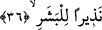
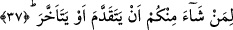

36. İnsanlık için bir uyarıcıdır.
“İnsanlık için uyarıcıdır” ifâdesi, yukarda geçen cümlenin temyizi olup onu
açıklamaktadır: “O sekar Allah’ın cehennemliklere azap vermek için yaratmış olduğu
büyük musîbetlerden birisidir.” İşte bu “nezîr” ifâdesinin temyiz olarak mansup olması
doğru bir takdirdir. Bu tıpkı “hiye ihde’n-nisâi afâfen/filanca kadın iffetli olması
bakımından kadınlardan biridir” cümlesinde olduğu gibidir. “Nezîr” tıpkı “nekîr”
ifâdesi gibi masdardır. Buna göre âyet-i kerîmenin mânâsı o sekar, uyarıcı olmak
bakımından büyük musîbetlerden biridir, denmiş olmaktadır.
37. Sizden ileri gitmek ya da geri kalmak isteyen kimseler için.
Bu ifâde yukarda geçen “beşer” kelimesinden bedeldir. Çünkü beşer kelimesinin
başındaki “lam” burada da yeniden ifâde olunmuştur. “Minkum” ifâdesi önce geçen
“men” kelimesinden hâldir. Bu açıklamaların ışığı altında âyetin mânâsı şöyle olur: “O
sekar içinizden hayra, cennete ve itâata koşan ve koştuğu için de Allah’ın kendisine
hidâyet eylediği ya da bunu istemeyip ma’siyet işleyerek bu yarıştan geri kalan ve
kaldığı için de Allah’ın yolunu şaşırdığı kimseler için bir uyarıcıdır.
Bu âyet-i kerîme, kulun kazancının rahmet ve mahrûmiyeti elde etmede rolünün
olduğuna işâret etmektedir.
et-Tevilâtü’n-necmiyye’de bu kısım şöyle tefsir olunuyor: “Allah Teâlâ tertemiz şerîat
“ay”ının nûru, kapkaranlık tabîat “gece”sinin zulmeti ve tabîatın karanlığına gâlip
geldiği esnâda bembeyaz hakîkat “sabah”ı üzerine yemin ediyor ki: “Ordular” bu büyük
külli mertebelerden birisinin dışa vuran mezâhiri/görüntüleridir. Bu külli mertebeler ya
ehl-i şerîat, ya ehl-i hakîkat, ya da ehl-i tabîattır. “Neziyran lil beşer” ifâdesine gelince
biz yukarda sıralanan üç külli mertebeyi insanoğlu uyanıp kendine gelsin, inzâr ehlinden
olmaktan kaçınsın diye üç mertebeye hasrettik, üç mertebe olarak kısıtladık, sizlerden
dileyenler şerîat makamına koşsun ya da tabîat makamına geri kalsın diye... Hakîkat
mertebelerin en yücesi olduğu ve oraya kâmil insanlardan uyarılara tam kulak verenler
ulaşabildiği için bu makam zikredilmemiştir.” Hakîkat ehlinin şerîat makamına doğru
koşanlar sınıfına dâhil olması da mümkündür. Çünkü hakîkat ehli ile şerîat ehlinden
herbiri -aralarında ileriye doğru koşma bakımından bir fark, seyirde bir farklılık,
koşmada bir ayrıcalık olmakla birlikte- ileriye doğru koşanlardandır. Kısacası
“isti’dad” ehli kalp, ruh, sırr makamına doğru kemalat, hayrat, fezaili kazanmak
sûretiyle ilerlemişlerdir. Bunların dışında olanlar ise bedene onun arzularına ve
lezzetine meyletmek sûretiyle geri kalmışlardır ve bunun sonucu olarak tabîat çukuruna